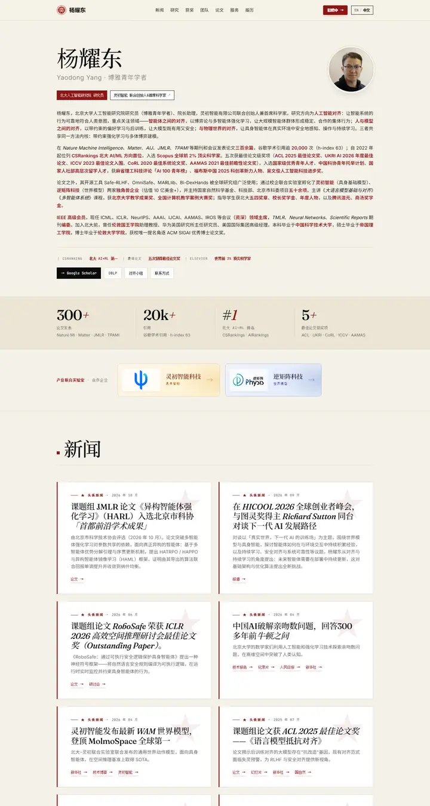

杨耀东 · Yaodong Yang · 北京大学
北京大学の深紅を押した、クリーム色の新聞紙風ドシエ。タイプライター体のラベルとセリフの題字。

表示されたページと照合済みです。
選んだ理由
隅々までアートディレクションされたページです。二言語のセリフ見出し、深紅のアクセント、数字を並べたスタッツ帯、エディトリアルなニュースカードが組み合わさり、リズムの強い自信あるアイデンティティを生んでいます。
以下の説明と DESIGN.md 本文は英語です。コーディングエージェントが同じ一つの版を読めるよう、翻訳していません。
概要
カラーパレット
タイポグラフィ
Fraunces
杨耀东 · Yaodong Yang · 北京大学, reinforcement learning, AI alignment
Abstract · Method · Results · BibTeX — 0123456789
Inter
杨耀东 · Yaodong Yang · 北京大学, reinforcement learning, AI alignment
Abstract · Method · Results · BibTeX — 0123456789
Noto Sans SC
杨耀东 · Yaodong Yang · 北京大学, reinforcement learning, AI alignment
Abstract · Method · Results · BibTeX — 0123456789
余白と形
ページの構成要素
ガイドライン
似たスタイル

Amir Bar
Imperial ブルーの端正な教員案内。白地に Inter、ピル型のリンク、手を伸ばすと数ピクセル浮き上がる論文カード。

Christoph Feichtenhofer
学会ホールの横断幕のような Facebook ブルーの帯に続き、赤字の論文名、緑の掲載先、両端揃えのグレーの要旨が長い台帳のように並ぶ。

David Novotny
夕暮れの港と静かな閲覧室。ティールからミッドナイトへの固定パネルに右揃えの連絡先、白地には柔らかなグレーの文字とタンジェリン色のリンク。

Jaeyeon Kim
細い Roboto で組んだ静かなゼミの配布資料。声を張るのは赤くハイライトされたひとつの問いとミント色のタグの列だけ。

Jonathan Shafer
基調講演のオープニングスライド。全面に広がるスレートブルーの面ひとつ、リングで囲んだ肖像、108px の名前、会場の後ろからでも読める中央揃えの段落。

Junyang Lin
温かみのある紙に綴じた、静かな研究者のフォリオ。Garamond の見出し、ティールの小さなラベル、細い罫線で区切られた項目。